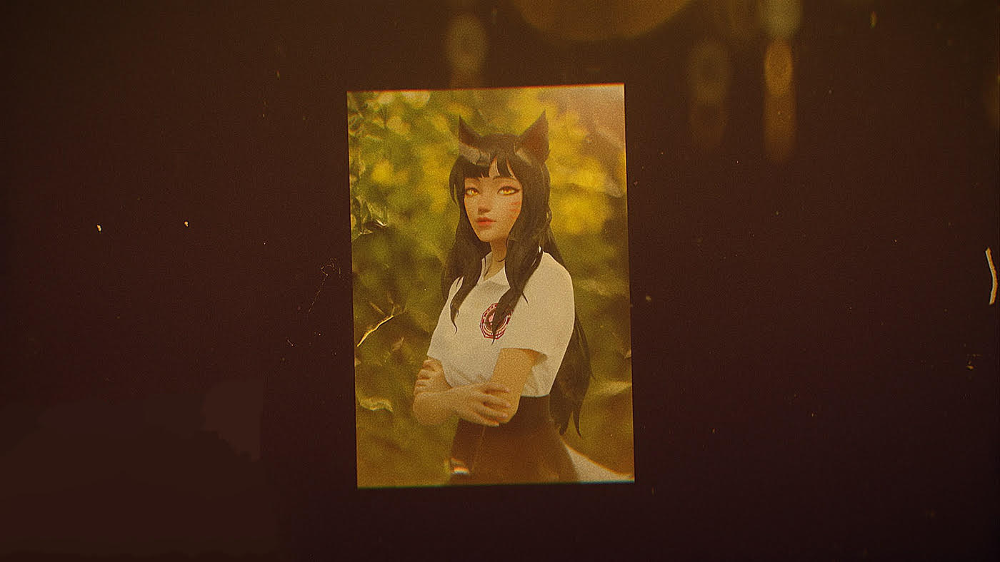

Quem é Ahri Vesani?
"As emoções humanas têm o poder de gerar tanto o melhor quanto o pior, cabendo a nós decidir como usá-las."
Descubra mais por tras da artista pop mais badalada da década


Além dos holofotes: Ahri e seu compromisso com causas sociais Apesar de sua agenda lotada, Ahri é conhecida por dedicar tempo e recursos a projetos beneficentes. Ela apoia iniciativas voltadas para a educação e o empoderamento de jovens artistas, reconhecendo a importância de dar oportunidades a novos talentos. Seu engajamento social é tão admirado quanto sua música, solidificando sua imagem como uma artista completa e altruísta.

Uma descoberta que mudou tudo Ahri teve seu talento descoberto em uma competição local de canto, onde chamou a atenção de produtores musicais. Combinando sua voz cativante e habilidades de dança impressionantes, ela rapidamente assinou com uma grande gravadora. Seu primeiro single foi um sucesso estrondoso, impulsionando sua carreira para novos patamares e abrindo portas para sua ascensão como a artista mais promissora da década.

Ahri: de estudante tímida à estrela pop internacional Antes de conquistar os palcos, Ahri era uma estudante reservada em sua escola de ensino médio, sempre fascinada por música e dança. Apesar de sua timidez, ela se destacava nas apresentações escolares, encantando colegas e professores com sua presença de palco magnética. Muitos que a conheciam naquela época lembram-se de sua determinação e amor pela arte, que já davam pistas do futuro brilhante que a aguardava.